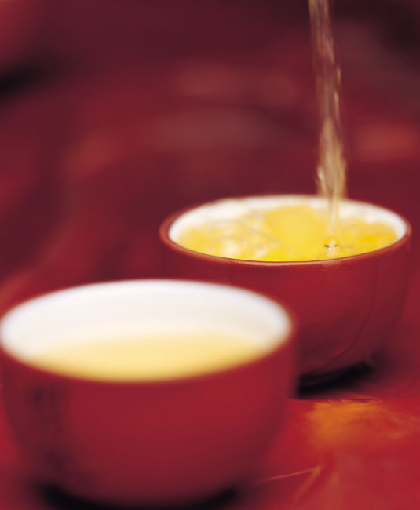

Foreign trade export is another outstanding advantage of the company. The company has a strong naval force-the Ministry of Foreign Trade. The Foreign Trade Department has assembled many foreign language talents, as well as operational experts with global vision and practical experience. In 2004, the company's first "40-foot container" was exported to Russia, marking the beginning of Shan Guoyin's foreign trade strategy. In August 2007, the company passed the inspection of the National Commodity Inspection Department and was awarded the "Export Food Hygiene Registration Certificate", becoming a private enterprise in Xiamen ** Rong. Over the years, the company has cooperated with world-renowned companies such as InterContinental Hotel Group, Tiens Group, AMHK Group, Russian Baolin Enterprise, American TEA-JUNCTION, Kuwait TEA-ART Center, etc., to become designated partners. Up to now, XXXXXX tea exports have reached 30 countries, and its export business ranks among the top in Fujian tea industry. Fragrance spreads to China and is well-known all over the world. This excellent foreign trade army is working non-stop to spread the tea aroma of Shan Guoyin to every corner of the world. The company continuously introduces international advanced tea-making equipment, realizes the controllable upgrade of the whole process from raw materials to finished product packaging, and sets the industry benchmark in the direction of creating specialization and standardization. At the same time, the company has always been in the forefront of the same industry in product innovation. It has spent a lot of money to cooperate with authoritative tea research institutions to develop new varieties. The tea masters continue to push the taste of tea to a new perfect level. "Orange fragrance" is an effort made by the company to break the homogenized Tieguanyin market. The company will continue to launch new products in the future to meet the diverse needs of the majority of tea friends.
company aim“tea product”。 The company has realized intelligent informationization and management process, and formed a diversified business pattern. It has XXXXXX international standard green tea base, XXXXXX tea processing plant, XXXXXX tea set center, XXXXXX logistics center / distribution center, XXXXXX tea food processing plant. , XXXXXX Tea Tea Store / Business Tea House, XXXXXX Domestic Chain Management and Operation Headquarters, XXXXXX (Hong Kong) Tea Co., Ltd., etc., is a comprehensive industrialization, grouping and internationalization that integrates brand tea chain operation and tea export Sex tea industry. Over the years, "China's first choice to join the brand with confidence", "China's top ten tea brands", "Top 50 Chinese national characteristics tea", "China's famous brand", "Top ten Chinese tea industry chain companies" and "xx will be the only "Specified gift tea" ... one by one honor witnesses the development of XXXXXX's growing strength and rising. Sentimentally, XXXXXX. Taking "love" as the core value of the brand and promoting the Chinese tea culture as its responsibility, XXXXXX's corporate vision is to build a more respected tea brand in China and become a true tea industry champion.

This conference not only brought wonderful reports from experts, but also provided a platform for mutual communication and learning, to understand and master the development of cloud computing technology, and to improve the level of informationization in universities.
，Bring us harvest and hope。